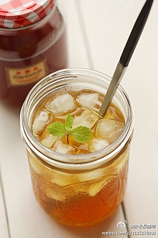

【DIY豆豉蒸排骨】排骨洗净剁小块，加料酒、生抽拌匀腌15分钟；2金针菇切去老根，撕散后在水中浸泡5分钟后洗净；豆豉洗净，红椒切丁，葱切末；金针菇放入盆的底部，再码入排骨，撒上葱白，豆豉及红椒丁；蒸锅中倒入足DIY豆豉蒸
西瓜沙冰这不是又到酷暑，又想吃冰的日子，就让西瓜和冰结合在一起，送来清凉一刻。水果
【紫薯银耳羹】材料：银耳、紫薯、葡萄干、冰糖 。做法：1、干银耳放温水中浸泡一晚，紫薯洗净去皮。2、银耳撕小朵，紫薯切丁，葡萄干洗净备用。3、银耳放在锅中大火煮开。4、再放入紫薯丁、冰糖、葡萄干，大火煮开。...紫薯银
蕾蒂夹心蛋糕 圆形的手指饼干蕾蒂蛋糕是一款不放一点油脂的甜品，在两片蛋糕中间涂了甜蜜的巧克力酱当夹心。这种圆形的手指饼干搭配巧克力简直合适极了。 蕾蒂夹心蛋糕 来源：潘晓晔 【蕾蒂夹心蛋糕】 原料：蛋黄2个、蛋白3个、白砂糖...饼干 蛋糕 手
【香甜软嫩的秋梨蛋羹】1.梨洗净从顶端切开,用勺子挖掉内心;2.鸡蛋打到碗里搅匀倒入梨中(保持蛋液在梨的三分之二处,太多煮的时候会溢出来);3.把梨放入蒸锅中,可以放一滴香油在里面;4.盖上锅盖,蒸15min香甜可口的秋梨...香甜软嫩的秋
火龙果雪梨汁每天只需要花上几分钟的时间，就可以喝上一大杯健康清润的火龙果雪梨汁，因为做这个果汁实在是太简单了。
【菠萝鱼】 1.将鱼肉切成2CM大小方块，用鱼腌料拌匀腌制15分钟 。 2.将菠萝切成小方块，青红椒切成小块 。 3.起锅热油，鱼块沾面粉煎至表面微黄。 4.锅内留底油，将准备好的番茄酱料烧至浓稠。 5.下入菠萝块及青红椒菠
#食单#【铁板蒸扇贝】步骤：1.将扇贝洗净去除里面的杂质和泥沙。2.预热铁板，将扇贝码放于受热的铁板上，并用盖子盖好，两分钟后，用扁铲往扇贝的四周灌入清水，利用铁板的热度“蒸”扇贝。三分钟后，在扇贝的表面加食单 铁
#tea party#【甜橙红茶】只要稍稍多一点专注，便能拥有悠闲自在的心情。在静谧的午后，坐下来和朋友聊聊天、喝杯茶，幸福其实就这么简单。将冰块放入玻璃杯中。红茶包用50ml热水冲泡出茶汁，然后加入白砂糖。待白砂糖tea party
便当系列2-《柱候酱猪蹄》-新年更加要努力！:新年来了 好运起呦，一年过去一切危机，不必悲观丧气呀，风和雨 经的起，今年更加要努力 要努力！ 《柱候酱猪蹄》食材：猪蹄半只、柱候酱一羹、姜片适量、西兰花适量、油盐少许。
简易版烤鸭的做法:简易版烤鸭 材料：净鸭1只（约1000克） 腌料：葱10克、姜5克、桂皮5克、花椒5克、大料5克、香叶2片 刷料：麦芽糖2大勺、料酒1小勺、温水少许 1、将鸭子内外清洗干净，放入开水锅中焯烫，不断将热水淋在外皮上

清香桂花马蹄糕马蹄糕加了桂花，进食时会吃到桂花的清香味道。其做法简单，软糯鲜甜，有助于消化，可当作早餐或者茶点享用。中式糕
【椒麻肚丝】做法：1处理净的猪肚放锅里，加水、葱姜、料酒大火煮开，打去浮沫。2）转小火煮至猪肚熟透，夹出放碗里放凉。3）小米辣、青指椒、花椒切碎混合一起再用刀剁成细末，葱切葱花。4）猪肚切细丝，放大的碗里...椒
【椰汁西米糕 】1.西米煮至透明；2.煮好捞出冲凉沥干 ；3.西米放入10g白糖搅匀， 平铺容器底部； 4.锅中倒200ml椰浆、25g白糖 、小火煮化 ；5.放入冷水泡软、挤干水份的吉利丁片2片搅化 ；6.倒入底部铺有西米的容器中...椰汁
【香芒双皮奶】做法：1)牛奶煮到微沸，倒入碗中放凉2)用筷子挑起凝结的奶皮，倒出下面的牛奶3)倒出的牛奶加糖搅拌融化，过滤进打散的蛋白，搅匀4)蛋奶液重新倒进碗中，让奶皮漂浮起来，封保鲜膜上蒸锅，水开后小火蒸...香芒双
【香芒双皮奶】做法：1)牛奶煮到微沸，倒入碗中放凉2)用筷子挑起凝结的奶皮，倒出下面的牛奶3)倒出的牛奶加糖搅拌融化，过滤进打散的蛋白，搅匀4)蛋奶液重新倒进碗中，让奶皮漂浮起来，封保鲜膜上蒸锅，水开后小火蒸...香芒双
【香芒双皮奶】做法：1)牛奶煮到微沸，倒入碗中放凉2)用筷子挑起凝结的奶皮，倒出下面的牛奶3)倒出的牛奶加糖搅拌融化，过滤进打散的蛋白，搅匀4)蛋奶液重新倒进碗中，让奶皮漂浮起来，封保鲜膜上蒸锅，水开后小火蒸...香芒双